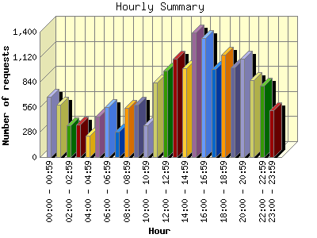
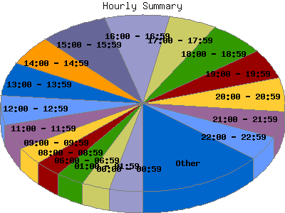

Report generated by Analog 5.91beta1 and Report Magic 2.21
|
Web Server Statistics for "Harish Narayanan (hnarayan) - October 2003" Report generated by Analog 5.91beta1 and Report Magic 2.21 |
The Hourly Summary identifies the level of activity broken down by each hour. Remember that one page hit can result in several server requests as the images for each page are loaded. This summary also compares the level of activity during working hours and after hours as a total for the report time frame.


| Hour | Number of requests | Number of bytes transferred | Percentage of the bytes | Percentage of the requests | |
|---|---|---|---|---|---|
| 1. | 00:00 - 00:59 | 670 | 17.621 MB | 6.58% | 3.72% |
| 2. | 01:00 - 01:59 | 586 | 5.778 MB | 2.16% | 3.26% |
| 3. | 02:00 - 02:59 | 350 | 5.598 MB | 2.09% | 1.95% |
| 4. | 03:00 - 03:59 | 359 | 5.885 MB | 2.20% | 2.00% |
| 5. | 04:00 - 04:59 | 241 | 4.886 MB | 1.82% | 1.34% |
| 6. | 05:00 - 05:59 | 454 | 5.597 MB | 2.09% | 2.52% |
| 7. | 06:00 - 06:59 | 556 | 5.909 MB | 2.21% | 3.09% |
| 8. | 07:00 - 07:59 | 280 | 4.492 MB | 1.68% | 1.56% |
| 9. | 08:00 - 08:59 | 546 | 7.250 MB | 2.71% | 3.03% |
| 10. | 09:00 - 09:59 | 586 | 6.497 MB | 2.42% | 3.26% |
| 11. | 10:00 - 10:59 | 351 | 6.801 MB | 2.54% | 1.95% |
| 12. | 11:00 - 11:59 | 834 | 17.770 MB | 6.63% | 4.63% |
| 13. | 12:00 - 12:59 | 965 | 14.659 MB | 5.47% | 5.36% |
| 14. | 13:00 - 13:59 | 1,102 | 11.010 MB | 4.11% | 6.12% |
| 15. | 14:00 - 14:59 | 989 | 13.565 MB | 5.06% | 5.50% |
| 16. | 15:00 - 15:59 | 1,389 | 19.772 MB | 7.38% | 7.72% |
| 17. | 16:00 - 16:59 | 1,332 | 23.230 MB | 8.67% | 7.40% |
| 18. | 17:00 - 17:59 | 986 | 18.924 MB | 7.06% | 5.48% |
| 19. | 18:00 - 18:59 | 1,145 | 18.447 MB | 6.88% | 6.36% |
| 20. | 19:00 - 19:59 | 997 | 12.261 MB | 4.58% | 5.54% |
| 21. | 20:00 - 20:59 | 1,099 | 15.959 MB | 5.96% | 6.11% |
| 22. | 21:00 - 21:59 | 863 | 13.328 MB | 4.97% | 4.79% |
| 23. | 22:00 - 22:59 | 797 | 7.559 MB | 2.82% | 4.43% |
| 24. | 23:00 - 23:59 | 520 | 5.143 MB | 1.92% | 2.89% |
| Work Hours (8:00am-4:59pm) | 8,094 | 120.554 MB | 44.99% | 44.97% | |
| After Hours (5:00pm-7:59am) | 9,903 | 147.388 MB | 55.01% | 55.03% | |
This report was generated on January 18, 2004 18:27.
Report time frame October 1, 2003 00:41 to October 31, 2003 23:51.
| Web statistics report produced by: | |
 Analog 5.91beta1 Analog 5.91beta1 |  Report Magic 2.21 Report Magic 2.21 |